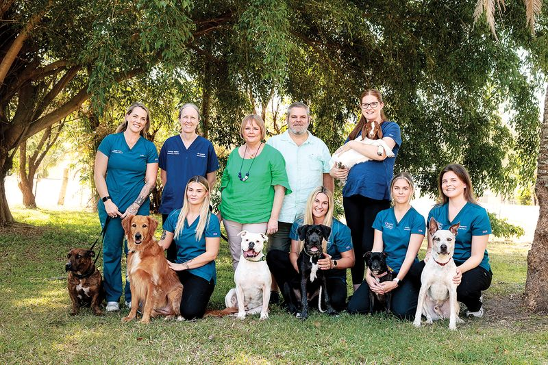
Vets, nurses and support staff who share one goal — exceptional care for every pet in the Whitsundays.
Dr Tess, Dr Nat, Dr Mark & Dr Macauley
Every team member chose this for love of animals
Decades of expertise in the Whitsundays
Available on call 24/7 for urgent care
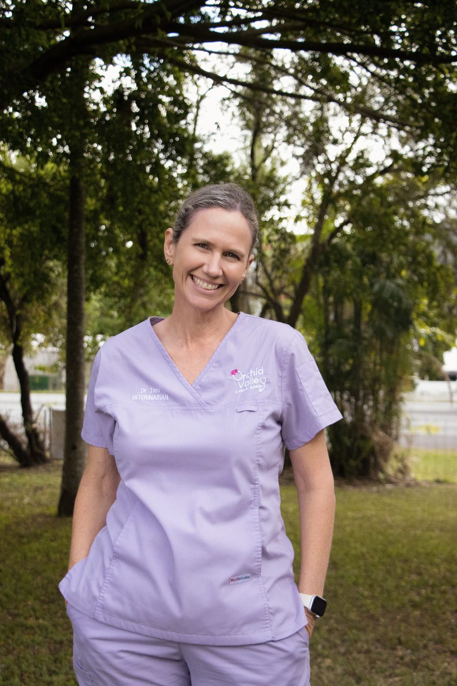
VeterinarianDr Tess brings warmth, expertise and a genuine love of animals to every consultation. With years of experience across small animal medicine and surgery, she's passionate about building lasting relationships with the pets and families of Airlie Beach and the Whitsundays.
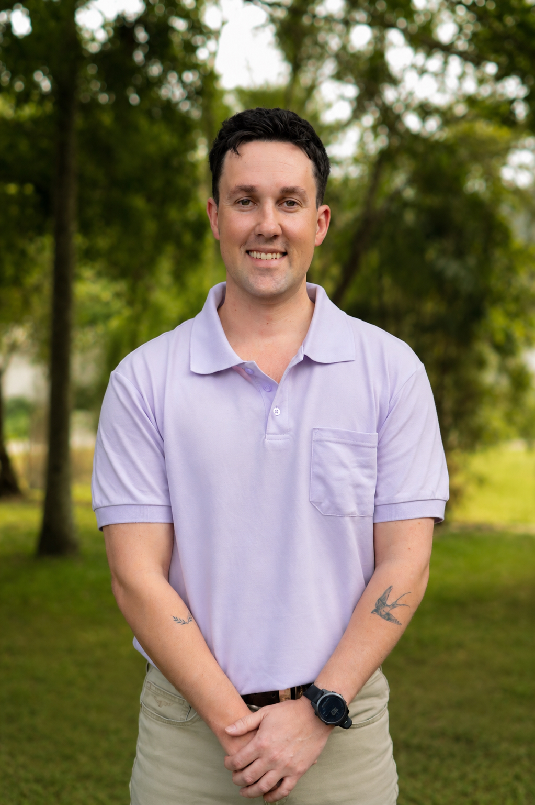
VeterinarianDr Nat is a compassionate and skilled vet with a keen interest in preventive care and client education. He believes that an informed pet owner is the best partner in keeping animals healthy and happy.
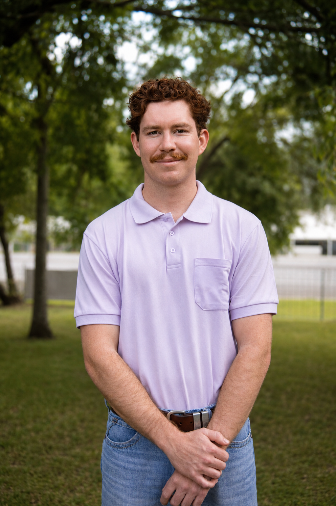
VeterinarianDr Macauley brings broad experience and a calm, methodical approach to every case. A skilled and versatile clinician, he's a valued permanent member of our team and fits seamlessly into our community.
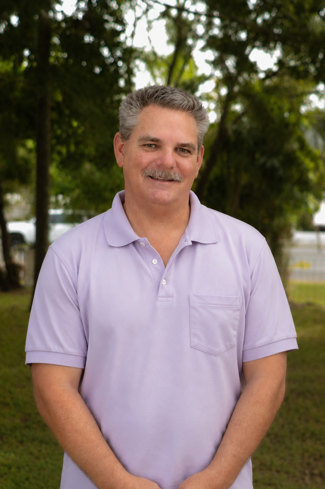
VeterinarianDr Mark brings a calm, methodical approach to every case. His thorough diagnostic skills and genuine care for each patient make him a valued member of the Airlie Beach Veterinary Surgery team.
Our nurses and practice manager are the backbone of Airlie Beach Veterinary Surgery — ensuring every patient receives the warmth, care and attention they deserve.
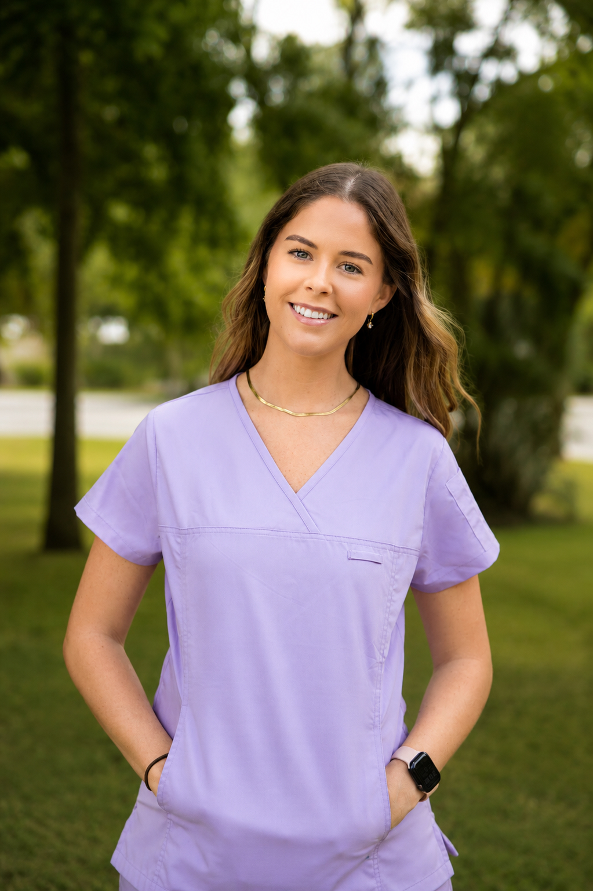
Practice ManagerKatie keeps the whole clinic running smoothly. As Practice Manager, she's the backbone of Airlie Beach Veterinary Surgery — ensuring every client has a wonderful experience and every team member has what they need to do their best work.
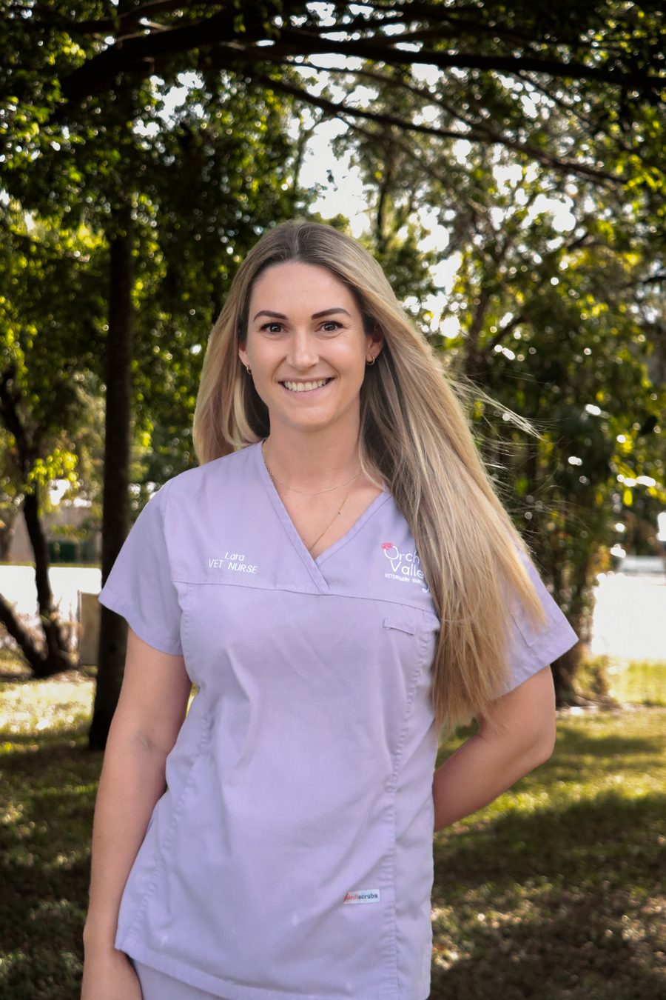
Veterinary NurseLara is a warm and dedicated nurse whose genuine love for animals shines through in every interaction. She brings care and professionalism to every patient, making sure each pet and their owner feels comfortable and well looked after.
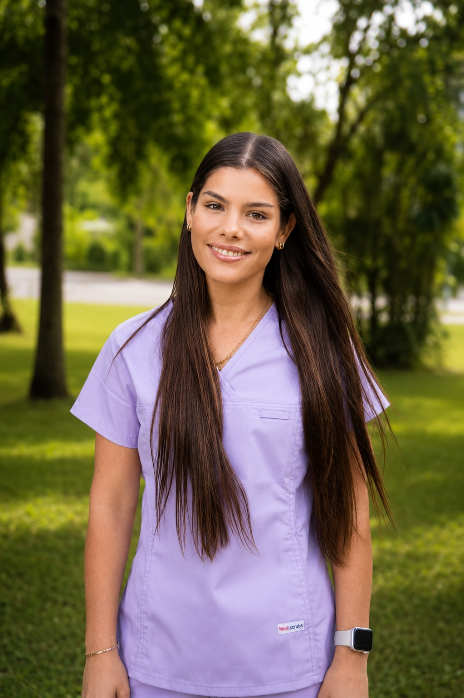
Veterinary NurseGrace is a dedicated and gentle nurse who goes above and beyond for every patient. Her calm presence puts even the most anxious animals at ease, and her passion for animal welfare shines through in everything she does.
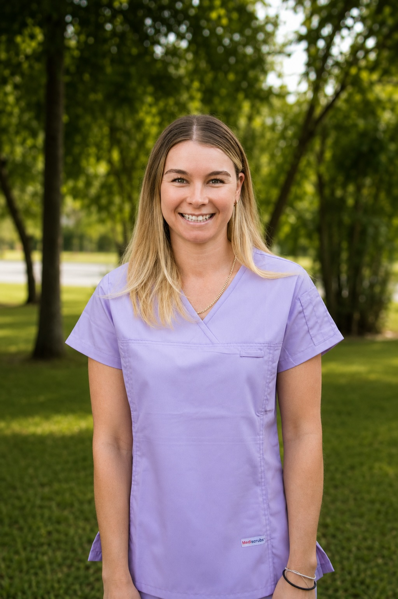
Veterinary NurseKarly's infectious enthusiasm and genuine love of animals make her a favourite with both pets and their owners. She brings energy, care and skill to every shift and is always ready to go the extra mile.
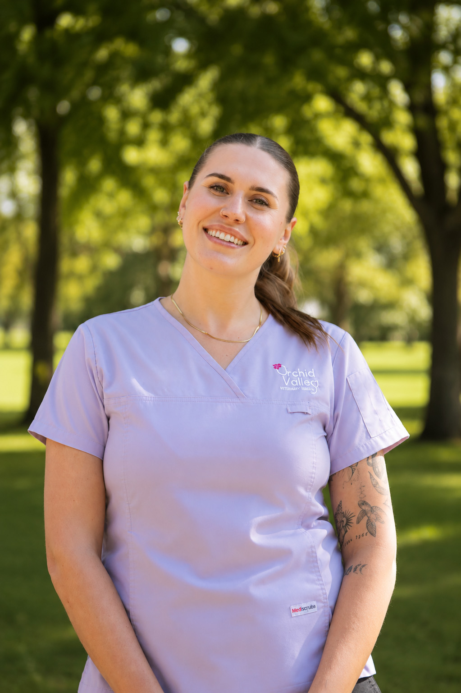
Veterinary NurseGemma is a compassionate and attentive nurse who brings warmth and positivity to every interaction. She has a natural ability to make both pets and their owners feel comfortable, and her genuine love for animals is reflected in the exceptional care she provides each day.
A few glimpses into the joy our team brings to work every single day.
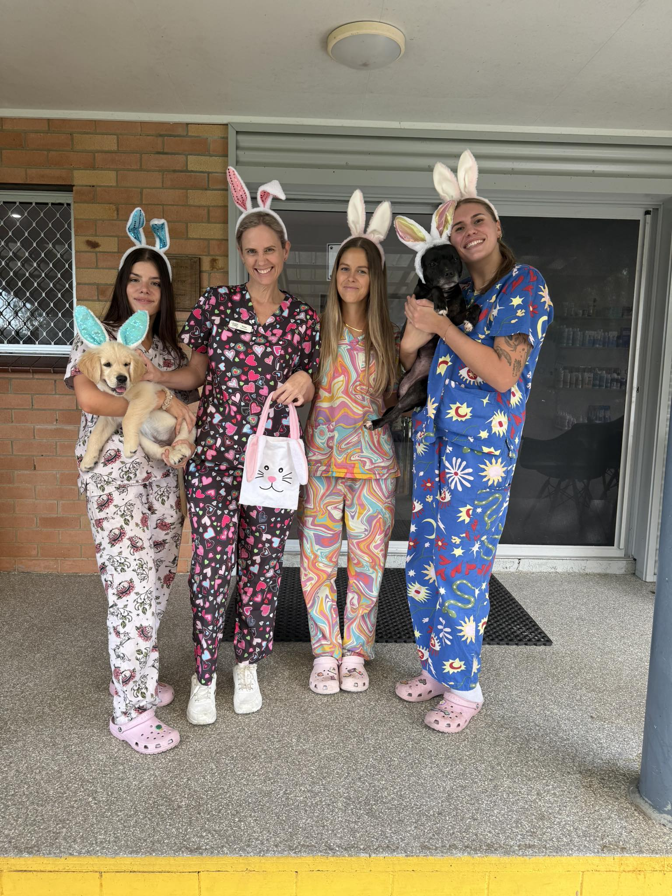
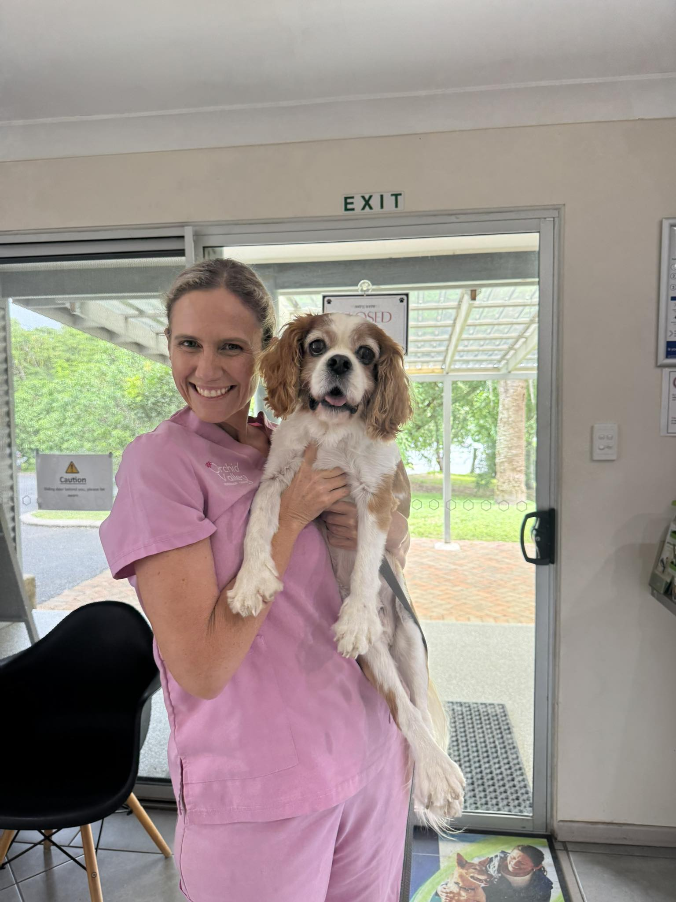
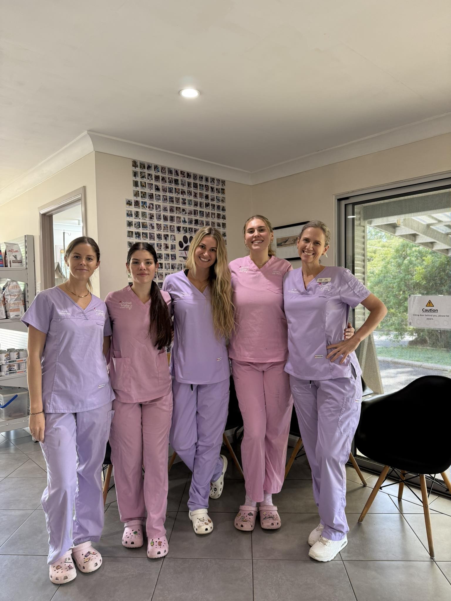
We're always keen to hear from passionate vets and nurses who share our love of animals.
Our team is here for your pet — open 6 days a week, with 24/7 on-call availability.